Simulation Results
As we said in the simulation page, we wanted to explore the changing in phase of liquid crystals under cooling process.
We did this by preforming Monte Carlo method with Gay-Berne potential.
2D Simulation
2D Simulation - first try
We simulated 10X10 particles in two dimensions.
We use .jpg)
where T is the temperature of the system.
Beginning with  = 3 and
= 3 and  = 0.5 ,
= 0.5 , = 1 ,
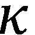 = 3 ,
= 1 ,
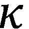 = 3 ,  = 5 , 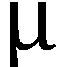 = 1 ,
= 5 , 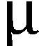 = 1 ,  = 3.
= 3.
The changing of temperature at each cooling step was 0.05.
Now we shall begin our cooling process.
At each step (temperature) we allow at most 100000 Metropolis tries and then continue cooling.
As we can see here in our output we get an order out of the mess:
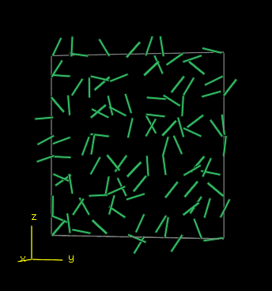

We can also see the change of phase at around = 2.5, where it changed from Nematic Liquid Crystal to Smectic.
 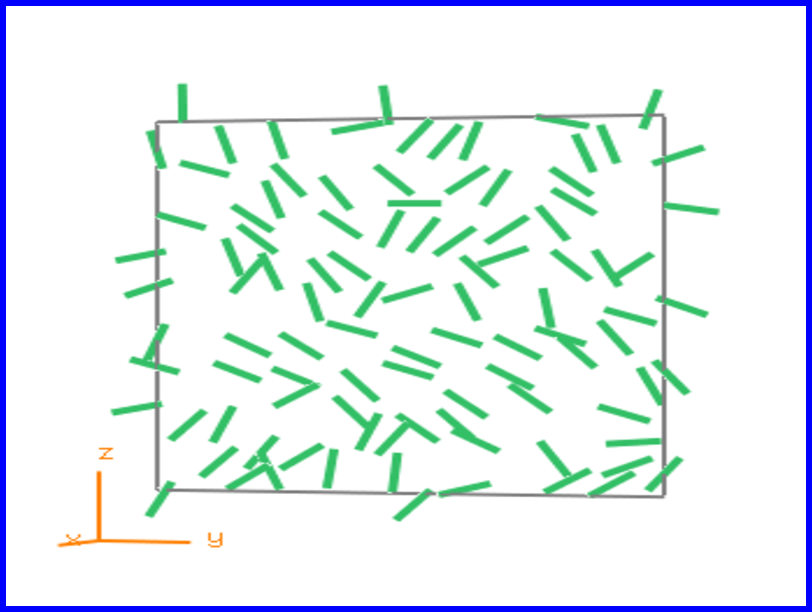
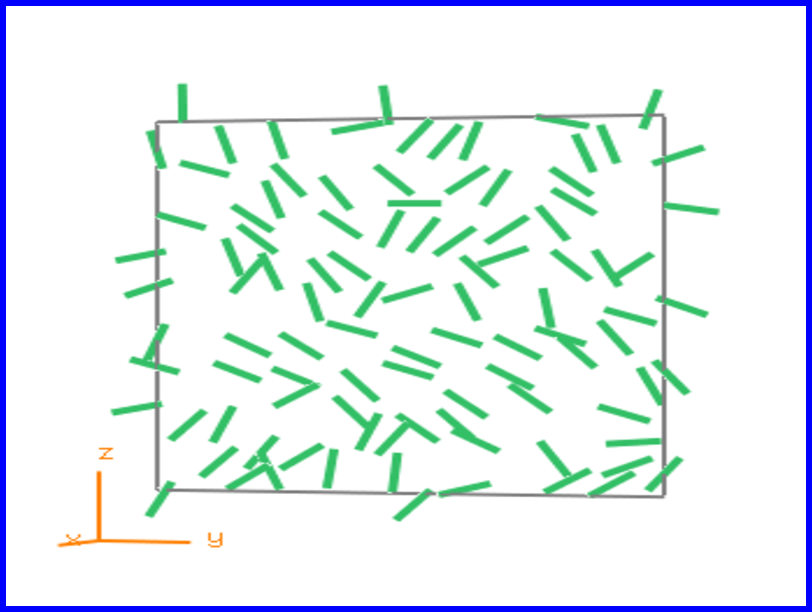
Then there is another change of phase at around = 1.8 , where it changed to a different type of Smectic Liquid Crystal.

Later wards there is a fast quench at around = 0.5.
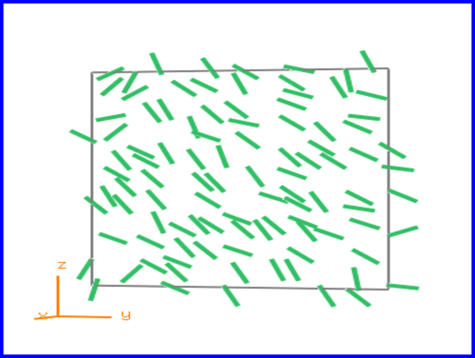
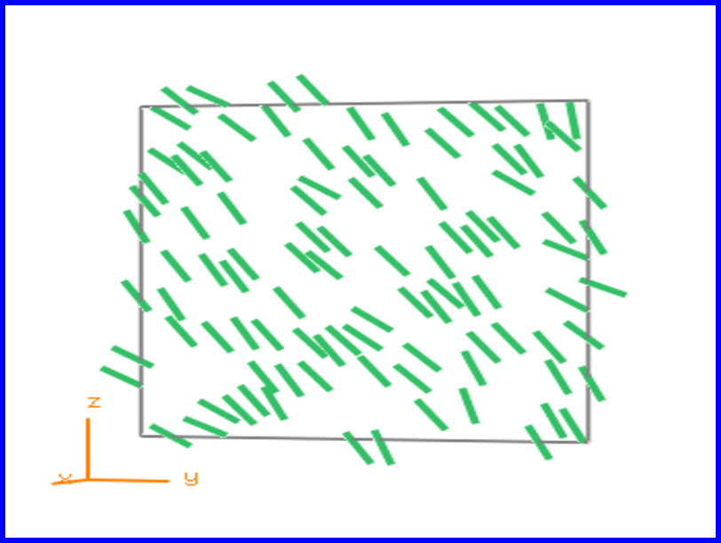
You can read more about the change of phase in Liquid Crystal in our explanation page
The full statistics with the charts and animations can be found here.
More explanation of how to use the statistics can be fin in the manual page.
Second try with simulation 2D system
We now simulated again 10X10 particles in two dimensions, with the same system parameter .
except for the initial temperature- = 4, and the changing of temperature at each cooling step-
now it is 0.01 between = 1.5 to = 0.01 , so we get a slower cooling.
We will be able to see more changes in Phase.
At the begging we had an isotropic state:
Now we can actually see change of phase at around = 3.5, where it changed to Nematic Liquid Crystal.

We can see the change of phase at around = 2.5 from Nematic to Smectic A Liquid Crystal.
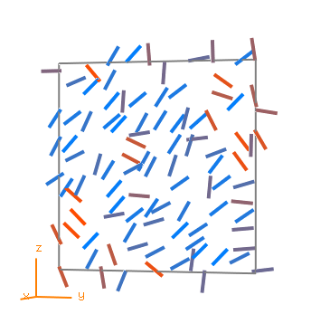
Then there is another change of phase at around = 1.5 , where it changed from Smectic A to Smectic B Liquid Crystal.

Then there is change of phase at around = 1 , where it changed from Smectic B to Smectic C Liquid Crystal.

Finally there is a fast quench at around = 0.38.


You can read more about the change of phase in Liquid Crystal in our explanation page
The full statistics with the charts and animations can be found here.
More explanation of how to use the statistics can be fin in the manual page.
3D Simulation
Now we simulates 5X5X5 particles in 3 dimensions.
We use
with the same parameters as in 2D except for adding one other dimension with Periodic boundary.

We can also see the change of phase at around = 2.4, where it changed from Nematic Liquid Crystal to Smectic.

Then there is another change of phase at around = 1.8 , where it changed to a different type of Smectic Liquid Crystal.
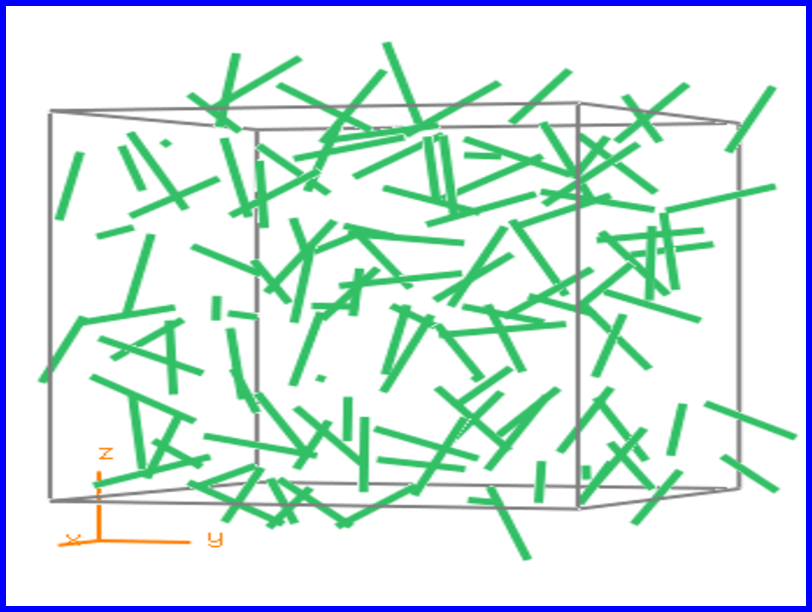
Later wards there is a fast quench at around = 0.8.
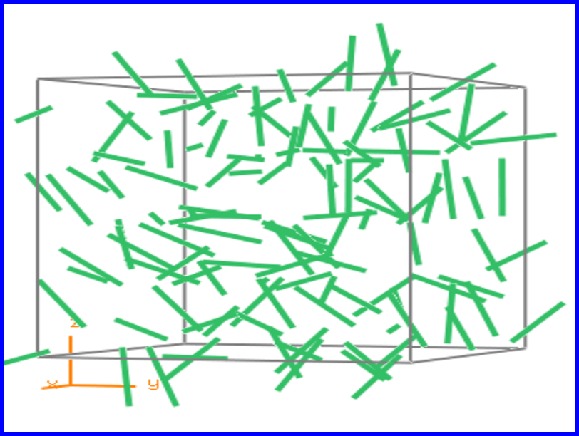
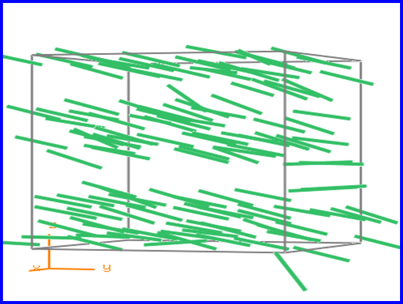
You can read more about the change of phase in Liquid Crystal in our explanation page
The full statistics with the charts and animations can be found here.
More explanation of how to use the statistics can be fin in the manual page.